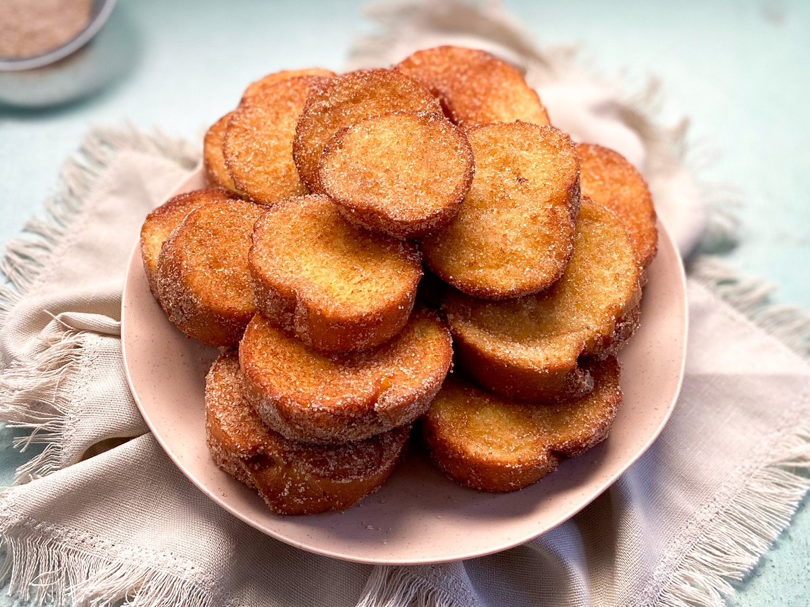

Clássicos

Ver Receita
Rabanada Clássica com Açúcar e Canela
Rabanadas macias por dentro e levemente douradas por fora, passadas no açúcar com canela. Sabor nostálgico e aconchegante.
 30MIN
30MIN
 Serve 6 pessoas
Serve 6 pessoas
 Fácil
Fácil